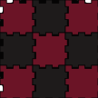

A guide for every pose
Frame lines, or a faint body outline that matches the pose: relaxed, bicep, side, or back flexed. It only shows on screen, never in your photo.

SculptFree · Open source · Android
Sculpt is a private photo logbook for tracking your physique. Line up with a guide, compare any two dates, and keep every photo on your phone.
Android 8.0 or newer · Apache-2.0 license · No account needed
Progress is hard to see when every photo is framed differently. Sculpt helps you take them the same way each time, then puts any two side by side.
Frame lines, or a faint body outline that matches the pose: relaxed, bicep, side, or back flexed. It only shows on screen, never in your photo.
Your previous shot of the same pose floats over the live camera, so you can match your position and distance.
Front, front bicep, side, back and back flexed to start. Turn them on or off, rename them, drag them into order, or add your own.
Open your oldest and newest photo of a pose in one tap, or pick any two. View them side by side, or fade one over the other. Pinch to zoom both at once.
Set a countdown and put the phone down. Hands-free mode shoots every remaining pose in turn from a single tap.
A theme inspired by interlocking gym-mat tiles, in maroon and black, with a light version for bright rooms.
Choose from the pose wheel. The guide and the ghost of your last photo switch with it.
Match the outline, tap the shutter, and watch your day's progress fill up.
Open Gallery, tap Compare, and see how far you've come, pose by pose.
These are photos of your body, so Sculpt is built so that nobody else can see them, not even us.
One thing to know: because nothing is uploaded, nothing is backed up either. If you uninstall the app or lose your phone, the photos go with it. An export and restore option is planned.
Sculpt isn't on the Play Store. You install the APK straight from GitHub.
Sculpt-<version>.apk.Every release comes with a .sha256 file. On a computer, run shasum -a 256 Sculpt-<version>.apk and compare the result. Releases are also signed with one key. Its certificate fingerprint is:
SHA-256 C7:C3:AB:62:50:DE:5E:1F:19:7B:EA:35:FC:73:42:07:
EC:BF:A9:DC:0F:04:BE:CA:BB:94:6A:FA:3F:BD:B4:40Check it with apksigner verify --print-certs Sculpt-<version>.apk. If it doesn't match, don't install the file.
Sculpt is licensed under Apache-2.0 and built in the open. Bug reports, ideas and pull requests are welcome.